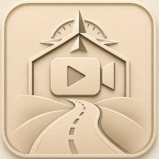
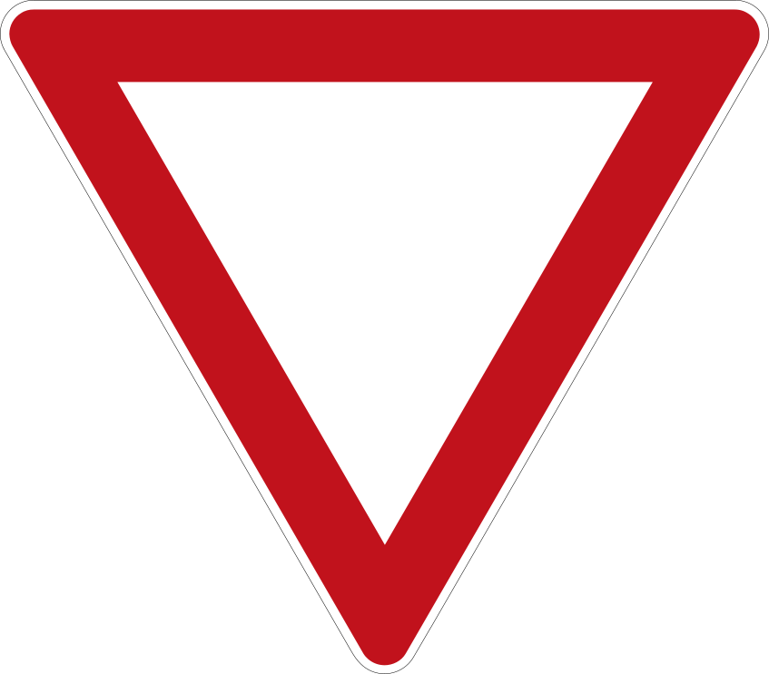
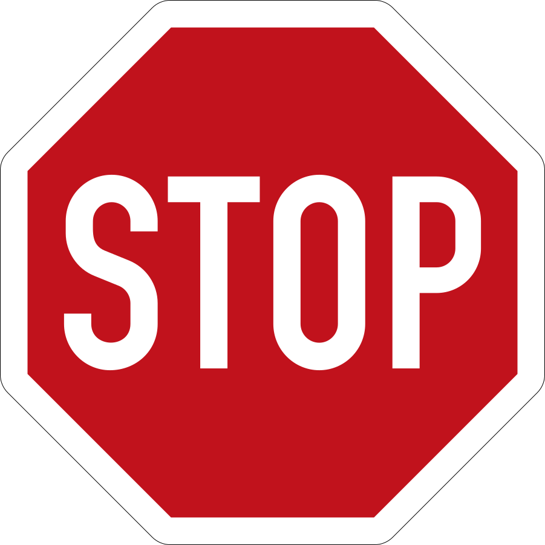
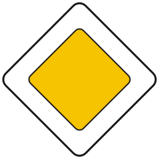

<!doctype html>
<html lang="de">
<head>
<meta charset="UTF-8" />
<meta name="viewport" content="width=1920, height=1080" />
<title>Vorfahrt – wer fährt zuerst?</title>
<script src="assets/lib/gsap.min.js"></script>
<style>
@font-face{font-family:'Barlow';font-weight:400;font-style:normal;src:url('assets/fonts/Barlow-400.ttf') format('truetype');}
@font-face{font-family:'Barlow';font-weight:500;font-style:normal;src:url('assets/fonts/Barlow-500.ttf') format('truetype');}
@font-face{font-family:'Barlow';font-weight:600;font-style:normal;src:url('assets/fonts/Barlow-600.ttf') format('truetype');}
@font-face{font-family:'Barlow';font-weight:700;font-style:normal;src:url('assets/fonts/Barlow-700.ttf') format('truetype');}
@font-face{font-family:'Playfair Display';font-weight:600;font-style:normal;src:url('assets/fonts/PlayfairDisplay-600.ttf') format('truetype');}
@font-face{font-family:'Playfair Display';font-weight:700;font-style:normal;src:url('assets/fonts/PlayfairDisplay-700.ttf') format('truetype');}

  * { margin: 0; padding: 0; box-sizing: border-box; }
  :root { --paper:#FAF6EC; --ink:#2F4A34; --green:#3F6B4B; --gold:#D9954C; --gold-text:#8F5A14; --text:#2B2A22; --muted:#6F6857; --hair:rgba(43,42,34,.16); }
  html, body { width:1920px; height:1080px; overflow:hidden; background:var(--paper); font-family:'Barlow',sans-serif; color:var(--text); }
  #root { position:relative; width:1920px; height:1080px; overflow:hidden; background:var(--paper); }
  .scene { position:absolute; left:0; top:0; width:1920px; height:1080px; }
  .stage { position:absolute; left:0; top:0; width:1080px; height:1080px; overflow:hidden; background:#E8E0CB; }
  .stage > * { position:absolute; }
  .road { left:0; top:0; }
  .car { left:0; top:0; width:125px; height:65px; margin:-32.5px 0 0 -62.5px; transform-origin:62.5px 32.5px; filter:drop-shadow(0 7px 7px rgba(43,42,34,.30)); }
  .sign { filter:drop-shadow(0 8px 8px rgba(43,42,34,.35)); }
  .badge { width:68px; height:68px; margin:-34px 0 0 -34px; border-radius:50%; background:var(--gold); color:var(--text); font:700 44px/68px 'Playfair Display',serif; text-align:center; box-shadow:0 6px 14px rgba(43,42,34,.30); border:3px solid #FFF8E8; }
  .pill { padding:6px 22px; border-radius:999px; background:var(--paper); color:var(--ink); border:3px solid var(--gold); font:700 34px/1.2 'Barlow',sans-serif; white-space:nowrap; box-shadow:0 5px 12px rgba(43,42,34,.25); }
  .arrow { filter:drop-shadow(0 4px 5px rgba(43,42,34,.3)); }
  /* Panel rechts */
  .panel { position:absolute; left:1080px; top:0; width:840px; height:1080px; padding:78px 70px 0 70px; background:var(--paper); border-left:2px solid var(--hair); }
  .dots { display:flex; gap:10px; margin-bottom:38px; }
  .dots i { display:block; width:14px; height:14px; border-radius:7px; background:rgba(47,74,52,.22); }
  .dots i.on { width:46px; background:var(--gold); }
  .kicker { font:600 30px/1.2 'Barlow',sans-serif; letter-spacing:.14em; text-transform:uppercase; color:var(--gold-text); }
  .ttl { font:700 80px/1.04 'Playfair Display',serif; color:var(--ink); margin-top:16px; }
  .sub { font:500 40px/1.3 'Barlow',sans-serif; color:var(--muted); margin-top:24px; }
  .pts { margin-top:18px; }
  .pt { position:relative; padding-left:42px; margin-top:34px; }
  .pt::before { content:''; position:absolute; left:0; top:15px; width:17px; height:17px; border-radius:5px; background:var(--gold); }
  .pt .tx { font:600 44px/1.24 'Barlow',sans-serif; color:var(--text); }
  .pt .rf { font:500 30px/1.3 'Barlow',sans-serif; color:var(--muted); margin-top:8px; }
  .pt.gold .tx { color:var(--gold-text); }
  .compact .pt { margin-top:22px; }
  .compact .pt .tx { font-size:39px; line-height:1.2; }
  .compact .pt .rf { font-size:30px; margin-top:4px; }
  .merk { position:absolute; left:70px; right:70px; bottom:168px; padding:30px 38px; background:var(--ink); color:var(--paper); border-left:12px solid var(--gold); border-radius:6px 18px 18px 6px; font:600 46px/1.22 'Playfair Display',serif; box-shadow:0 10px 24px rgba(43,42,34,.25); }
  .foot { position:absolute; left:70px; bottom:50px; display:flex; align-items:center; gap:20px; font:600 30px/1 'Barlow',sans-serif; color:var(--muted); }
  .foot img { width:84px; height:84px; border-radius:20px; }
  /* Pyramide */
  .tier { left:0; width:1080px; height:200px; }
  .tier .shape { left:0; top:0; width:1080px; height:200px; position:absolute; }
  .tier .ct { position:absolute; left:0; top:0; width:1080px; height:200px; display:flex; align-items:center; justify-content:center; gap:30px; }
  .tier .nm { font:700 58px/1.05 'Playfair Display',serif; }
  .tier .signs { display:flex; gap:16px; }
  .tier .signs img { width:104px; height:104px; filter:drop-shadow(0 5px 5px rgba(0,0,0,.30)); }
  .step { position:absolute; left:70px; right:70px; top:320px; }
  .step .nr { font:700 150px/1 'Playfair Display',serif; color:var(--gold); }
  .step .nm { font:700 62px/1.1 'Playfair Display',serif; color:var(--ink); margin-top:6px; }
  .step .tx { font:600 44px/1.26 'Barlow',sans-serif; margin-top:22px; }
  .step .rf { font:500 30px/1.3 'Barlow',sans-serif; color:var(--muted); margin-top:14px; }
  .bigcard { left:90px; top:420px; width:900px; padding:44px 54px; background:var(--ink); color:var(--paper); border-left:14px solid var(--gold); border-radius:8px 22px 22px 8px; font:600 62px/1.2 'Playfair Display',serif; box-shadow:0 14px 30px rgba(43,42,34,.3); }
  .zonepill { left:60px; bottom:60px; padding:10px 28px; border-radius:999px; background:var(--paper); border:6px solid #C0392B; font:700 56px/1.1 'Barlow',sans-serif; color:var(--text); box-shadow:0 6px 14px rgba(43,42,34,.3); }
</style>
</head>
<body>
<div id="root" data-composition-id="main" data-start="0" data-duration="197" data-width="1920" data-height="1080">
  <section id="s1" class="scene clip" data-start="0"   data-duration="18" data-track-index="0"></section>
  <section id="s2" class="scene clip" data-start="18"  data-duration="39" data-track-index="0"></section>
  <section id="s3" class="scene clip" data-start="57"  data-duration="40" data-track-index="0"></section>
  <section id="s4" class="scene clip" data-start="97"  data-duration="41" data-track-index="0"></section>
  <section id="s5" class="scene clip" data-start="138" data-duration="29" data-track-index="0"></section>
  <section id="s6" class="scene clip" data-start="167" data-duration="30" data-track-index="0"></section>
</div>
<script src="text.js"></script>
<script src="baukasten.js"></script>
<script>
(function () {
  const T = window.FILM_TEXT, BK = window.BK, P = BK.P;
  const tl = gsap.timeline({ paused: true });
  window.__timelines = window.__timelines || {};
  window.__timelines["main"] = tl;

  const starts = []; let acc = 0;
  T.kapitel.forEach(k => { starts.push(acc); acc += k.dauer; });
  const el = (tag, cls, html) => { const d = document.createElement(tag); if (cls) d.className = cls; if (html) d.innerHTML = html; return d; };
  const fade = (target, t, d, from) => tl.fromTo(target, from || { opacity: 0, y: 24 }, { opacity: 1, y: 0, duration: d || 0.6, ease: "power2.out" }, t);

  function stageBase(sc, o) { const st = el("div", "stage"); st.innerHTML = o && o.noRoad ? "" : BK.roadSVG(o); sc.appendChild(st); return st; }

  function panel(sc, ch, i) {
    const p = el("div", "panel" + ((ch.punkte || []).length >= 4 && ch.id !== "k6" ? " compact" : ""));
    p.innerHTML = `<div class="dots">${T.kapitel.map((_, j) => `<i class="${j === i ? "on" : ""}"></i>`).join("")}</div>
      <div class="kicker">${ch.kicker}</div><h1 class="ttl" style="${ch.titel.length > 15 ? 'font-size:62px' : ''}">${ch.titel}</h1>${ch.untertitel ? `<div class="sub">${ch.untertitel}</div>` : ""}
      <div class="pts"></div><div class="foot"><span>Fahr-Akademie · Vorfahrt</span></div>`;
    sc.appendChild(p); return p;
  }
  function points(p, ch, T0, cutA) {
    const wrap = p.querySelector(".pts");
    (ch.punkte || []).forEach(pt => {
      const d = el("div", "pt" + (pt.stil === "gold" ? " gold" : ""), `<div class="tx">${pt.text}</div>${pt.ref ? `<div class="rf">${pt.ref}</div>` : ""}`);
      wrap.appendChild(d);
      if (pt.gruppe === "b") { tl.set(d, { display: "none" }, 0); tl.set(d, { display: "block" }, T0 + pt.t - 0.01); }
      if (pt.gruppe === "a" && cutA) tl.set(d, { display: "none" }, T0 + cutA);
      fade(d, T0 + pt.t);
    });
  }
  function merkCard(p, ch, T0) {
    if (!ch.merk) return;
    const m = el("div", "merk", ch.merk.text);
    m.style.top = "400px"; m.style.bottom = "auto"; m.style.fontSize = "56px"; p.appendChild(m);
    tl.to(p.querySelector(".pts"), { opacity: 0, duration: 0.4 }, T0 + ch.merk.t - 0.6);
    fade(m, T0 + ch.merk.t, 0.8, { opacity: 0, y: 30 });
  }
  function sceneFade(sc, T0, dur) {
    tl.fromTo(sc, { opacity: 0 }, { opacity: 1, duration: 0.5, ease: "power1.out" }, T0);
    tl.to(sc, { opacity: 0, duration: 0.4, ease: "power1.in" }, T0 + dur - 0.4);
  }
  const stopLights = (tl_, car, t0) => { const b = BK.carBits(car); tl_.to(b.brk, { opacity: 1, duration: 0.25 }, t0); return b; };

  /* ---------- Kapitel 1: Die Frage ---------- */
  function startAnordnung(st, id, T0, o) {
    const A = BK.makeCar(st, id + "a", "ivory"), B = BK.makeCar(st, id + "b", "gold"), C = BK.makeCar(st, id + "c", "green");
    BK.pose(tl, A, -100, 595, 0); BK.pose(tl, B, 595, 1180, -90); BK.pose(tl, C, 1180, 485, 180);
    BK.mv(tl, A, 338, 595, 0, 4.2, "power2.out", T0 + 1.0);
    BK.mv(tl, B, 595, 742, -90, 4.4, "power2.out", T0 + 1.8);
    BK.mv(tl, C, 742, 485, 180, 4.4, "power2.out", T0 + 2.3);
    [A, B, C].forEach((c, k) => stopLights(tl, c, T0 + 3.4 + k * 0.5));
    return { A, B, C };
  }
  function K1(sc, i, T0, ch) {
    const st = stageBase(sc); const p = panel(sc, ch, i);
    startAnordnung(st, "k1", T0);
    const qs = [BK.badge(st, "?", 338, 674), BK.badge(st, "?", 676, 742), BK.badge(st, "?", 742, 410)];
    qs.forEach((q, k) => { tl.fromTo(q, { opacity: 0, scale: 0.3 }, { opacity: 1, scale: 1, duration: 0.5, ease: "back.out(2)" }, T0 + 6.0 + k * 0.3); BK.pulse(tl, q, T0 + 7.2 + k * 0.3, T0 + 17.4); });
    tl.fromTo(p.querySelector(".ttl"), { opacity: 0, y: 30 }, { opacity: 1, y: 0, duration: 0.8, ease: "power2.out" }, T0 + 0.6);
    tl.fromTo(p.querySelector(".sub"), { opacity: 0, y: 20 }, { opacity: 1, y: 0, duration: 0.7, ease: "power2.out" }, T0 + 2.4);
    points(p, ch, T0);
  }

  /* ---------- Kapitel 2: Pyramide ---------- */
  function K2(sc, i, T0, ch) {
    const st = stageBase(sc, { noRoad: true }); st.style.background = "#EFE8D5";
    const p = panel(sc, ch, i);
    const widths = [300, 460, 620, 780, 940], fills = ["#2F4A34", "#3F6B4B", "#9CBF9F", "#D9954C"], cols = ["#FAF6EC", "#FAF6EC", "#2B2A22", "#2B2A22"];
    const icons = [
      `<div>${BK.policeSVG(112)}</div><div class="nm">Polizei</div>`,
      `<div>${BK.ampelSVG(140)}</div><div class="nm">Ampel</div>`,
      `<div class="signs"></div><div class="nm">Schilder</div>`,
      `<div>${BK.miniCross(140)}</div><div class="nm">Rechts vor links</div>`
    ];
    const tiers = [];
    for (let k = 0; k < 4; k++) {
      const y = 120 + 200 * k, wt = widths[k] + (widths[k + 1] - widths[k]) * 3 / 200, wb = widths[k] + (widths[k + 1] - widths[k]) * 197 / 200;
      const poly = `${(1080 - wt) / 2}px 3px, ${(1080 + wt) / 2}px 3px, ${(1080 + wb) / 2}px 197px, ${(1080 - wb) / 2}px 197px`;
      const t = el("div", "tier", `<div class="shape" style="background:${fills[k]};clip-path:polygon(${poly})"></div><div class="ct" style="color:${cols[k]}">${icons[k]}</div>`);
      t.style.top = y + "px"; st.appendChild(t); tiers.push(t);
      tl.fromTo(t, { opacity: 0, y: -70 }, { opacity: 1, y: 0, duration: 0.9, ease: "power3.out" }, T0 + ch.stufen[k].t);
    }
    // Vorrang-Pfeil
    const ar = BK.arrow(st, 38, 520, -90, 760); tl.fromTo(ar, { opacity: 0 }, { opacity: 1, duration: 0.8 }, T0 + ch.stufen[3].t + 3);
    const vp = BK.pill(st, "Vorrang", 108, 520, -90); tl.fromTo(vp, { opacity: 0 }, { opacity: 1, duration: 0.8 }, T0 + ch.stufen[3].t + 3.5);
    // Panel-Schritte
    ch.stufen.forEach((s, k) => {
      const d = el("div", "step", `<div class="nr">${s.nr}</div><div class="nm">${s.name}</div><div class="tx">${s.text}</div><div class="rf">${s.ref}</div>`);
      p.appendChild(d);
      const tEnd = k < 3 ? T0 + ch.stufen[k + 1].t - 0.3 : T0 + ch.merk.t - 0.3;
      tl.fromTo(d, { opacity: 0, y: 26 }, { opacity: 1, y: 0, duration: 0.6, ease: "power2.out" }, T0 + s.t + 0.2);
      tl.to(d, { opacity: 0, duration: 0.3 }, tEnd);
    });
    const m = el("div", "merk", ch.merk.text); m.style.bottom = "300px"; m.style.fontSize = "68px"; p.appendChild(m);
    fade(m, T0 + ch.merk.t, 0.8, { opacity: 0, y: 30 });
  }

  /* ---------- Kapitel 3: Rechts vor links (zwei Durchgänge, 2. um 180° gedreht) ---------- */
  function K3(sc, i, T0, ch) {
    const st = stageBase(sc); const p = panel(sc, ch, i);
    function zyklus(Tz, k, cx, cy) {
      const f = k ? (x, y, r) => [1080 - x, 1080 - y, r + 180] : (x, y, r) => [x, y, r];
      const X = BK.makeCar(st, "k3x" + k, cx), Y = BK.makeCar(st, "k3y" + k, cy);
      BK.pose(tl, X, ...f(-100, 595, 0)); BK.pose(tl, Y, ...f(595, 1180, -90));
      BK.mv(tl, X, ...f(338, 595, 0), 5.0, "power2.out", Tz + 1.0);
      const b = BK.carBits(X); BK.lights(tl, b.brk, Tz + 3.6, Tz + 7.5);
      BK.mv(tl, Y, ...f(595, -100, -90), 3.9, "none", Tz + 4.6);
      BK.mv(tl, X, ...f(1180, 595, 0), 3.2, "power2.in", Tz + 7.4);
      const [ax, ay, ar_] = f(595, 835, -90), [px, py] = f(690, 835, 0);
      const a = BK.arrow(st, ax, ay, ar_, 150), pl = BK.pill(st, "von rechts", px, py, 0);
      [a, pl].forEach(e => { tl.fromTo(e, { opacity: 0 }, { opacity: 1, duration: 0.5 }, Tz + 3.0); tl.to(e, { opacity: 0, duration: 0.5 }, Tz + 7.4); });
    }
    zyklus(T0 + 3.0, 0, "ivory", "gold");
    zyklus(T0 + 14.5, 1, "slate", "green");
    points(p, ch, T0); merkCard(p, ch, T0);
  }

  /* ---------- Kapitel 4: Links abbiegen (Zeiten auf den Sprechertext abgestimmt) ---------- */
  function K4(sc, i, T0, ch) {
    const st = stageBase(sc, { marks: "h" }); const p = panel(sc, ch, i);
    // Vorfahrtstraße: Zeichen 306 an zwei Ecken
    const s1 = BK.sign(st, "z306.svg", 384, 706, 88), s2 = BK.sign(st, "z306.svg", 696, 374, 88);
    [s1, s2].forEach(s => tl.fromTo(s, { opacity: 0, scale: 0.5 }, { opacity: 1, scale: 1, duration: 0.6, ease: "back.out(2)" }, T0 + 0.4));
    const L = BK.makeCar(st, "k4l", "ivory"), G = BK.makeCar(st, "k4g", "green"), R = BK.makeCar(st, "k4r", "slate");
    BK.pose(tl, L, -100, 595, 0); BK.pose(tl, G, 1180, 485, 180); BK.pose(tl, R, 1180, 485, 180);
    const bL = BK.carBits(L), bR = BK.carBits(R);
    // L kommt, blinkt links, hält (Satz 1)
    BK.mv(tl, L, 358, 595, 0, 3.6, "power2.out", T0 + 3.0);
    BK.blink(tl, bL.left, T0 + 3.4, T0 + 24.5); BK.lights(tl, bL.brk, T0 + 6.0, T0 + 22.0);
    // G fährt geradeaus durch (Satz 2)
    BK.mv(tl, G, -100, 485, 180, 3.9, "none", T0 + 11.2);
    // R (Gegenverkehr) biegt rechts nach Norden ab (Satz 3)
    BK.blink(tl, bR.right, T0 + 16.6, T0 + 19.8);
    let t = BK.mv(tl, R, 685, 485, 180, 1.65, "power1.out", T0 + 17.0);
    t = BK.arc(tl, R, 685, 395, 90, 90, 180, 90, 0.95, t, 12);
    BK.mv(tl, R, 595, -100, 270, 1.6, "power1.in", t);
    // L biegt links ab (Satz 4)
    let u = BK.mv(tl, L, 430, 595, 0, 1.0, "power1.in", T0 + 22.0);
    u = BK.arc(tl, L, 430, 430, 165, 90, 0, -90, 1.5, u, 14);
    BK.mv(tl, L, 595, -100, -90, 1.8, "power1.in", u);
    // Beispiel 2: zwei Linksabbieger von gegenüber, voreinander (Satz 5)
    const L2 = BK.makeCar(st, "k4l2", "ivory"), L3 = BK.makeCar(st, "k4l3", "gold");
    BK.pose(tl, L2, -100, 595, 0); BK.pose(tl, L3, 1180, 485, 180);
    const b2 = BK.carBits(L2), b3 = BK.carBits(L3), t2 = T0 + 26.6;
    BK.mv(tl, L2, 358, 595, 0, 2.6, "power2.out", t2); BK.mv(tl, L3, 722, 485, 180, 2.6, "power2.out", t2 + 0.2);
    BK.blink(tl, b2.left, t2 + 0.3, t2 + 8.2); BK.blink(tl, b3.left, t2 + 0.3, t2 + 8.2);
    BK.lights(tl, b2.brk, t2 + 1.8, t2 + 3.4); BK.lights(tl, b3.brk, t2 + 1.8, t2 + 3.4);
    const go = t2 + 3.7;
    let a = BK.mv(tl, L2, 515, 595, 0, 0.9, "power1.in", go); a = BK.arc(tl, L2, 515, 515, 80, 90, 0, -90, 1.1, a, 10); BK.mv(tl, L2, 595, -100, -90, 1.6, "power1.in", a);
    let c = BK.mv(tl, L3, 565, 485, 180, 0.9, "power1.in", go); c = BK.arc(tl, L3, 565, 565, 80, 270, 180, -90, 1.1, c, 10); BK.mv(tl, L3, 485, 1180, 90, 1.6, "power1.in", c);
    const vp = BK.pill(st, "voreinander", 540, 330, 0);
    tl.fromTo(vp, { opacity: 0 }, { opacity: 1, duration: 0.5 }, go - 0.4); tl.to(vp, { opacity: 0, duration: 0.5 }, go + 3.2);
    points(p, ch, T0); merkCard(p, ch, T0);
  }

  /* ---------- Kapitel 5: Tempo-30-Zone ---------- */
  function K5(sc, i, T0, ch) {
    const st = stageBase(sc); const p = panel(sc, ch, i);
    const z = BK.sign(st, "z2741.svg", 200, 330, 200); tl.fromTo(z, { opacity: 0, scale: 0.5 }, { opacity: 1, scale: 1, duration: 0.7, ease: "back.out(2)" }, T0 + 0.6);
    const zp = el("div", "zonepill", "30 km/h"); st.appendChild(zp); tl.fromTo(zp, { opacity: 0 }, { opacity: 1, duration: 0.6 }, T0 + 1.5);
    // parkende Autos und Hecke verdecken die Sicht nach rechts
    const pk = [BK.makeCar(st, "k5p1", "green"), BK.makeCar(st, "k5p2", "slate")];
    BK.pose(tl, pk[0], 462, 722, -90); BK.pose(tl, pk[1], 462, 842, -90);
    const hedge = el("div", "", ""); hedge.style.cssText = "left:262px;top:654px;width:150px;height:30px;border-radius:15px;background:#6F8F63;box-shadow:inset 0 -6px 0 rgba(0,0,0,.12),0 5px 8px rgba(43,42,34,.25)"; st.appendChild(hedge);
    const X = BK.makeCar(st, "k5x", "ivory"), Y1 = BK.makeCar(st, "k5y1", "gold"), Y2 = BK.makeCar(st, "k5y2", "slate");
    BK.pose(tl, X, -100, 595, 0); BK.pose(tl, Y1, 595, 1180, -90); BK.pose(tl, Y2, 595, 1180, -90);
    const b = BK.carBits(X);
    BK.mv(tl, X, 260, 595, 0, 3.4, "power1.out", T0 + 1.8);
    BK.mv(tl, X, 338, 595, 0, 2.2, "power1.out", T0 + 5.2); BK.lights(tl, b.brk, T0 + 5.6, T0 + 23.0);
    BK.mv(tl, X, 392, 595, 0, 2.0, "power1.inOut", T0 + 15.0);   // vorsichtig hineintasten (Satz 3)
    BK.mv(tl, Y1, 595, -100, -90, 5.0, "none", T0 + 16.2);
    BK.mv(tl, Y2, 595, -100, -90, 5.0, "none", T0 + 19.0);
    BK.mv(tl, X, 1180, 595, 0, 3.4, "power2.in", T0 + 22.4);
    points(p, ch, T0); merkCard(p, ch, T0);
  }

  /* ---------- Abspann: Auflösung ---------- */
  function K6(sc, i, T0, ch) {
    const st = stageBase(sc); const p = panel(sc, ch, i);
    const A = BK.makeCar(st, "k6a", "ivory"), B = BK.makeCar(st, "k6b", "gold"), C = BK.makeCar(st, "k6c", "green");
    BK.pose(tl, A, 338, 595, 0); BK.pose(tl, B, 595, 742, -90); BK.pose(tl, C, 742, 485, 180);
    [A, B, C].forEach(c => { tl.set(BK.carBits(c).brk, { opacity: 1 }, 0); });
    const nums = [[BK.badge(st, "1", 742, 410), 3.4], [BK.badge(st, "2", 676, 742), 9.0], [BK.badge(st, "3", 338, 674), 11.0]];
    nums.forEach(n => { tl.fromTo(n[0], { opacity: 0, scale: 0.3 }, { opacity: 1, scale: 1, duration: 0.5, ease: "back.out(2)" }, T0 + n[1]); tl.to(n[0], { opacity: 0, duration: 0.5 }, T0 + n[1] + 2.4); });
    BK.mv(tl, C, -100, 485, 180, 2.9, "power2.in", T0 + 4.0);
    BK.mv(tl, B, 595, -100, -90, 3.2, "power2.in", T0 + 9.4);
    BK.mv(tl, A, 1180, 595, 0, 3.4, "power2.in", T0 + 11.6);
    const m = el("div", "bigcard", ch.merk.text); st.appendChild(m);
    tl.fromTo(m, { opacity: 0, y: 30 }, { opacity: 1, y: 0, duration: 0.8, ease: "power2.out" }, T0 + ch.merk.t);
    points(p, ch, T0, 13.8);
  }

  const B = { k1: K1, k2: K2, k3: K3, k4: K4, k5: K5, k6: K6 };
  T.kapitel.forEach((ch, i) => {
    const sc = document.getElementById("s" + (i + 1)); const T0 = starts[i];
    B[ch.id](sc, i, T0, ch);
    sceneFade(sc, T0, ch.dauer);
  });
  tl.seek(0);
})();
</script>
</body>
</html>
